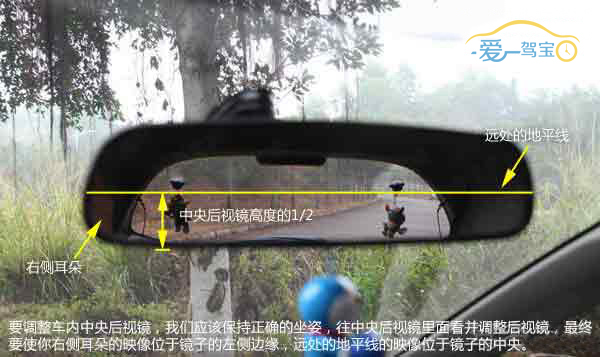

后视镜是驾驶员坐在驾驶室座位上直接获取汽车后方、侧方和下方等外部信息的工具。正确调节后视镜并非单纯为了缩小视觉盲区，而是要让我们的可视视野更有利于我们驾驶。
操作步骤
1 首先调整好座椅、方向盘，位置适中后再调整后视镜。
2 长方形按钮可选择左右后视镜，推到左边选择左后视镜，推到右边控制右后视镜圆形按钮控制后视镜角度。先按指向左右的按钮调节左右，再按指向上下的按钮调节上下。
3 对于中央内后视镜，我们要把中央后视镜里面的地平线映像调节至镜子中央，把你的右侧耳朵的映像调节至镜子左侧边缘。

4 对于左侧外后视镜，我们要把后视镜里面的地平线映像调节至镜子中央，把左侧车身的映像调节至占据镜子右侧1/4的区域。对于右侧外后视镜，我们要把后视镜里面的地平线映像调节至位于镜子高度的2/3处，把右侧车身的映像调节至占据镜子左侧1/4的区域。
 爱驾宝温馨提示
爱驾宝温馨提示